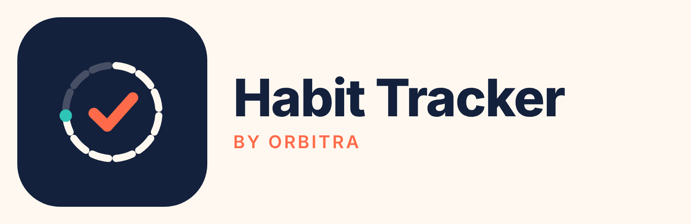
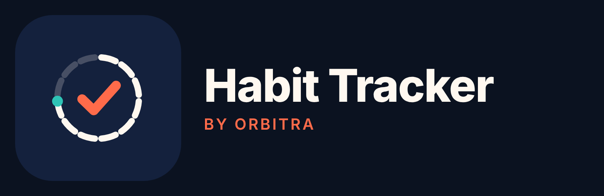
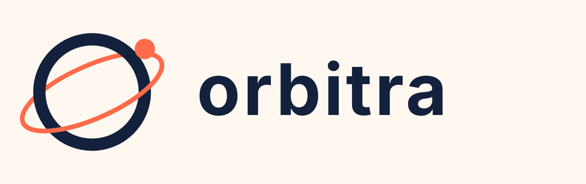
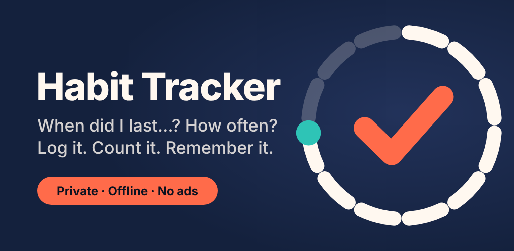
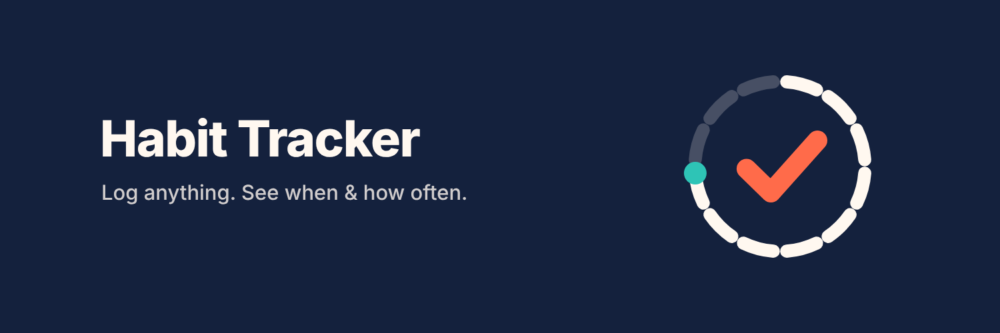
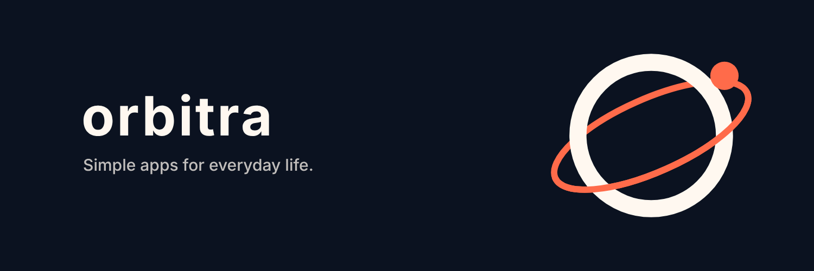

01 · The idea
Log it. Count it. Remember it.
Habit Tracker is a calm, private life log. People add the things they do — office days, gym, visiting Mom, a haircut — and instantly see when, how often, and how long ago. The brand should feel like a trusted notebook: warm, clear, and quietly satisfying when you tick something off.
02 · Logo
The Orbit Check
Twelve day-segments orbit a check mark. Nine are complete and a teal planet marks where you are now. It reads as "a cycle of days, ticked off" — the one thing the app does best. The orbit also ties the app to its maker, Orbitra.

Horizontal · light
Horizontal · darkDo
- Keep clear space of 25% of the mark's width on all sides
- Use the full-colour icon on Navy whenever possible
- Use the mono versions on photos or single-colour print
- Minimum size: 24 px (mark), 120 px wide (horizontal)
Don't
- Change the number of done segments or recolour the check
- Rotate, stretch, outline or add shadows to the mark
- Place the colour mark on Coral or busy photos
- Rewrite "Habit Tracker" in another typeface
03 · Developer brand
Orbitra
Orbitra is the studio that publishes Habit Tracker and future apps. Its ringed-planet mark shares the Coral accent and the orbit idea, so every Orbitra app feels part of one family.

Light04 · Colour
Navy, Coral, and a little Teal
Navy and Cream do most of the work. Coral is the action colour — buttons, the check, the add button. Teal means "done". Sun Yellow is only for streaks.
Midnight Navy#14213D · Brand, headers
Comet Coral#FF6B4A · Actions, check
Orbit Teal#2EC4B6 · Done / success
Sun Yellow#FFC857 · Streaks only
Moon Cream#FFF8F0 · Light background
Deep Ink#0B1220 · Dark background
Slate#5C6B7A · Secondary text
Text on Coral buttons uses Deep Ink (#0B1220), not white — it passes WCAG AA (contrast 6.6:1); white on Coral does not. Full light/dark tokens: tokens/design-tokens.json.
05 · Typography
Inter, everywhere
| Style | Size / line | Weight | Use |
|---|---|---|---|
| Display | 40 / 44 | Inter Display ExtraBold | Big numbers in stats |
| H1 | 28 / 34 | Bold | Screen titles |
| H2 | 22 / 28 | Bold | Section titles |
| Body | 16 / 22 | Regular | Everything else |
| Label | 14 / 18 | Medium | Buttons, chips |
| Caption | 12 / 16 | Regular | Dates, hints |
Inter is free under the SIL Open Font License. Font files are in fonts/.
06 · Voice
Calm, clear, encouraging
Sounds like
- "Nice — 12 this month."
- "Last time: 23 days ago."
- "Your log stays on your phone."
Doesn't sound like
- "You broke your streak! 😢"
- "The #1 ULTIMATE habit app!!!"
- "Don't lose your progress — act now!"
07 · Store & social
Ready-made assets


X header · Habit Tracker
X header · OrbitraProfile pictures and covers for Instagram, Facebook, X, LinkedIn, YouTube, TikTok and Threads are in social-media/habit-tracker/ and social-media/orbitra/, as SVG masters plus PNGs at each platform's size.